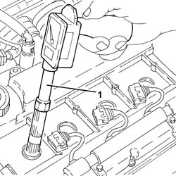
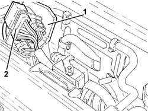
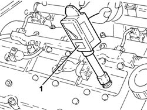
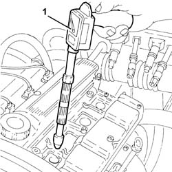

0510A10 CYLINDER COMPRESSION - CHECK FOR LOOSE SPARK PLUGS OR INJECTORS
- Path
- Procedures > 05 DIAGNOSTICS > 0510 VARIOUS CONTROLS > 0510A CHECKS ON ENGINE > 0510A10 CYLINDER COMPRESSION - CHECK FOR LOOSE SPARK PLUGS OR INJECTORS
- Kind
- repair procedure (removal / refitting; the operation number is the code)
- Applies to
- all engines; all production periods
- Interactive page
- https://sloeber94.github.io/elrnDB-aGt/en/#/125000854
Applies to: engines: 2.0 JTS; all production periods
Disconnect the electrical connections from the engine management control unit.
1056F82 CENTRALINA (unica) dell'impianto iniezione/accensione - S.R.
.
1. Insert the test equipment into one of the spark plug seats.
Turn the engine over several times, using the starter motor, keeping the accelerator and clutch pedals pressed.
Repeat the test on the remaining cylinders taking care to zero the instrument pointer each time.
Check that there is not a great difference between the pressure readings for the cylinders.

Applies to: engines: 2.0 JTS; all production periods
Connect the electrical connections to the engine management control unit.
1056B82 CENTRALINA (unica) dell'impianto iniezione/accensione - S.R.
.
Applies to: engines: 3.2 V6; all production periods
1. Open the electrical connection holder case.
2. Disconnect the engine coupling.

Applies to: engines: 3.2 V6; all production periods
1. Insert the test equipment into one of the spark plug seats.
Turn the engine over several times, using the starter motor, keeping the accelerator and clutch pedals pressed.
Repeat the test on the remaining cylinders taking care to zero the instrument pointer each time.
Check that there is not a great difference between the pressure readings for the cylinders.

Applies to: engines: 3.2 V6; all production periods
Connect the engine coupling.
Close the electrical connection holder case.
Applies to: engines: 1.9 JTD 16V; all production periods
Disconnect the electrical connections from the engine management control unit.
Op. 1060G80 DS ELECTRIC INJECTION CONTROL UNIT - R R.
Fit the tool on the test equipment.
Description | Code | |
|---|---|---|
- | Dummy injector | 1.870.683.000 |
Fit test equipment in the injector seat and secure it using the brackets.
Turn the engine over several times, using the starter motor, keeping the accelerator and clutch pedals pressed.
Repeat the test on the remaining cylinders taking care to zero the instrument pointer each time.
Check that there is not a great difference between the pressure readings for the cylinders.
Connect the electrical connections to the engine management control unit.
Applies to: engines: 1.8 T.SPARK; all production periods
- Disconnect the electrical connections from the engine management control unit.
- Op. 1056B82 CENTRALINA (UNICA) DELL'IMPIANTO INIEZIONE/ACCENSIONE - S.R.
- Insert the test equipment into one of the "centre" spark plug seats.
- Turn the engine over several times, using the starter motor, keeping the accelerator and clutch pedals pressed.
- Repeat the test on the remaining cylinders taking care to zero the instrument pointer each time.
- Check that there is not a great difference between the pressure readings for the cylinders.

Applies to: engines: 1.8 T.SPARK; all production periods
- Connect the electrical connections to the engine management control unit.
- Op. 1056B82 CENTRALINA (UNICA) DELL'IMPIANTO INIEZIONE/ACCENSIONE - S.R.